Exploratory AFM morphotype clusters. These are not disease classes.
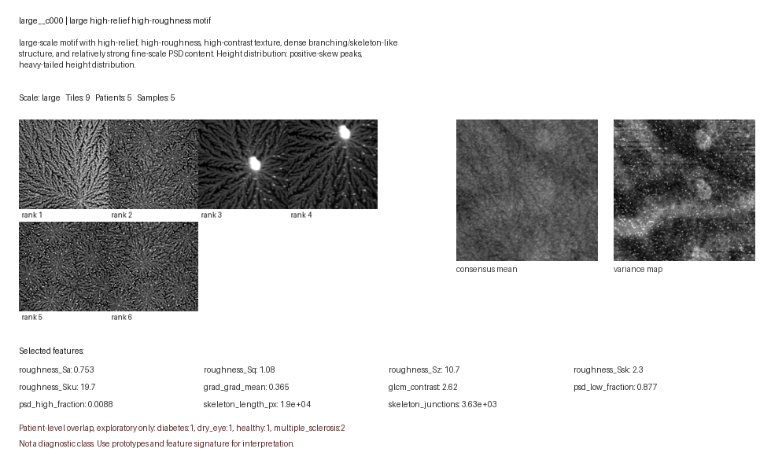
large-scale motif with high-relief, high-roughness, high-contrast texture, dense branching/skeleton-like structure, and relatively strong fine-scale PSD content. Height distribution: positive-skew peaks, heavy-tailed height distribution.
Scale: large | Tiles: 9 | Patients: 5 | Samples: 5
Patient-level overlap: diabetes:1, dry_eye:1, healthy:1, multiple_sclerosis:2
Warnings: none
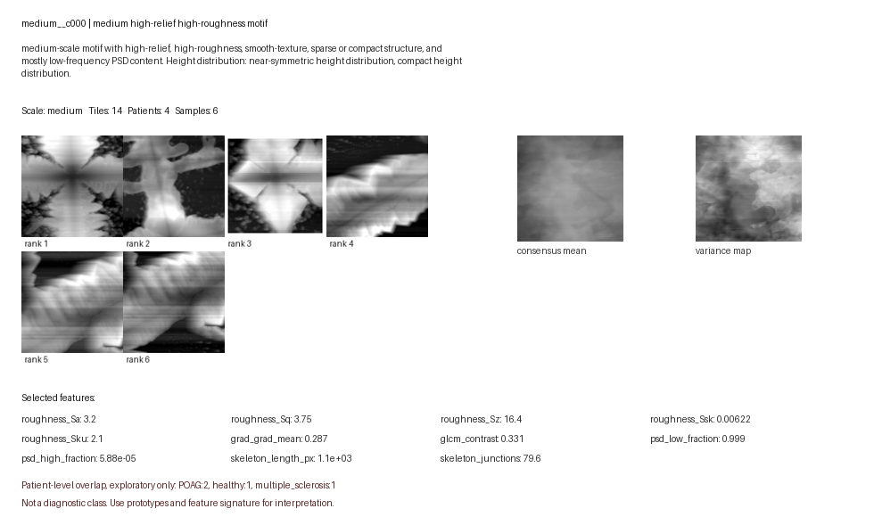
medium-scale motif with high-relief, high-roughness, smooth-texture, sparse or compact structure, and mostly low-frequency PSD content. Height distribution: near-symmetric height distribution, compact height distribution.
Scale: medium | Tiles: 14 | Patients: 4 | Samples: 6
Patient-level overlap: POAG:2, healthy:1, multiple_sclerosis:1
Warnings: none
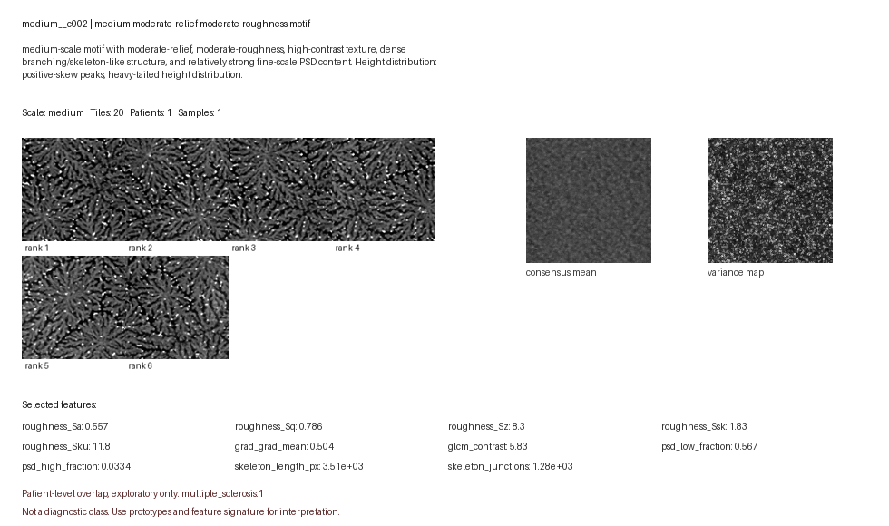
medium-scale motif with moderate-relief, moderate-roughness, high-contrast texture, dense branching/skeleton-like structure, and relatively strong fine-scale PSD content. Height distribution: positive-skew peaks, heavy-tailed height distribution.
Scale: medium | Tiles: 20 | Patients: 1 | Samples: 1
Patient-level overlap: multiple_sclerosis:1
Warnings: cluster_dominated_by_one_patient, cluster_dominated_by_one_sample
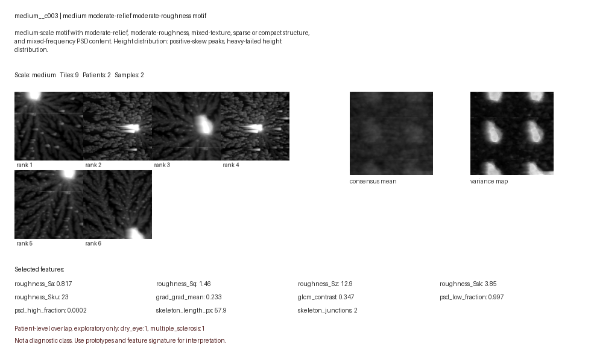
medium-scale motif with moderate-relief, moderate-roughness, mixed-texture, sparse or compact structure, and mixed-frequency PSD content. Height distribution: positive-skew peaks, heavy-tailed height distribution.
Scale: medium | Tiles: 9 | Patients: 2 | Samples: 2
Patient-level overlap: dry_eye:1, multiple_sclerosis:1
Warnings: cluster_dominated_by_one_patient, cluster_dominated_by_one_sample
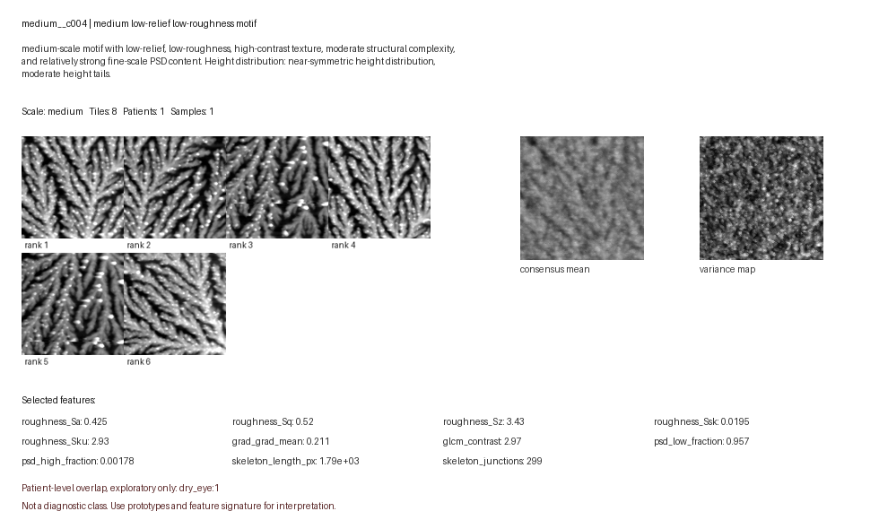
medium-scale motif with low-relief, low-roughness, high-contrast texture, moderate structural complexity, and relatively strong fine-scale PSD content. Height distribution: near-symmetric height distribution, moderate height tails.
Scale: medium | Tiles: 8 | Patients: 1 | Samples: 1
Patient-level overlap: dry_eye:1
Warnings: cluster_dominated_by_one_patient, cluster_dominated_by_one_sample
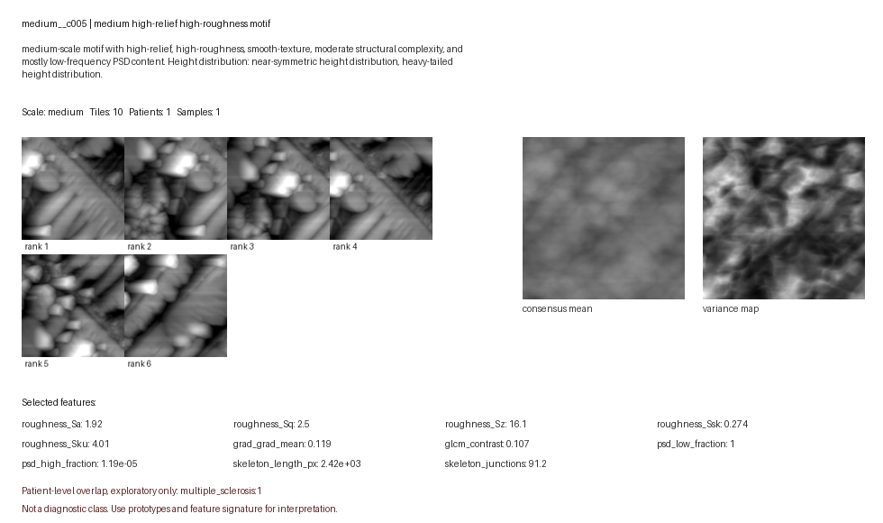
medium-scale motif with high-relief, high-roughness, smooth-texture, moderate structural complexity, and mostly low-frequency PSD content. Height distribution: near-symmetric height distribution, heavy-tailed height distribution.
Scale: medium | Tiles: 10 | Patients: 1 | Samples: 1
Patient-level overlap: multiple_sclerosis:1
Warnings: cluster_dominated_by_one_patient, cluster_dominated_by_one_sample
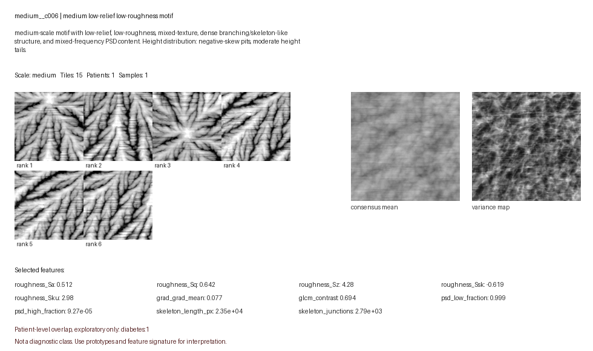
medium-scale motif with low-relief, low-roughness, mixed-texture, dense branching/skeleton-like structure, and mixed-frequency PSD content. Height distribution: negative-skew pits, moderate height tails.
Scale: medium | Tiles: 15 | Patients: 1 | Samples: 1
Patient-level overlap: diabetes:1
Warnings: cluster_dominated_by_one_patient, cluster_dominated_by_one_sample
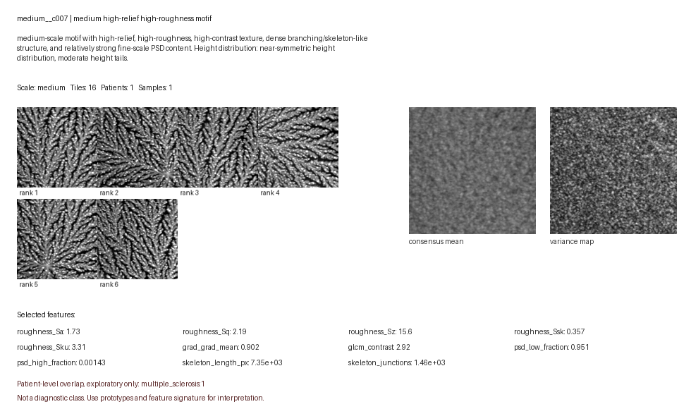
medium-scale motif with high-relief, high-roughness, high-contrast texture, dense branching/skeleton-like structure, and relatively strong fine-scale PSD content. Height distribution: near-symmetric height distribution, moderate height tails.
Scale: medium | Tiles: 16 | Patients: 1 | Samples: 1
Patient-level overlap: multiple_sclerosis:1
Warnings: cluster_dominated_by_one_patient, cluster_dominated_by_one_sample
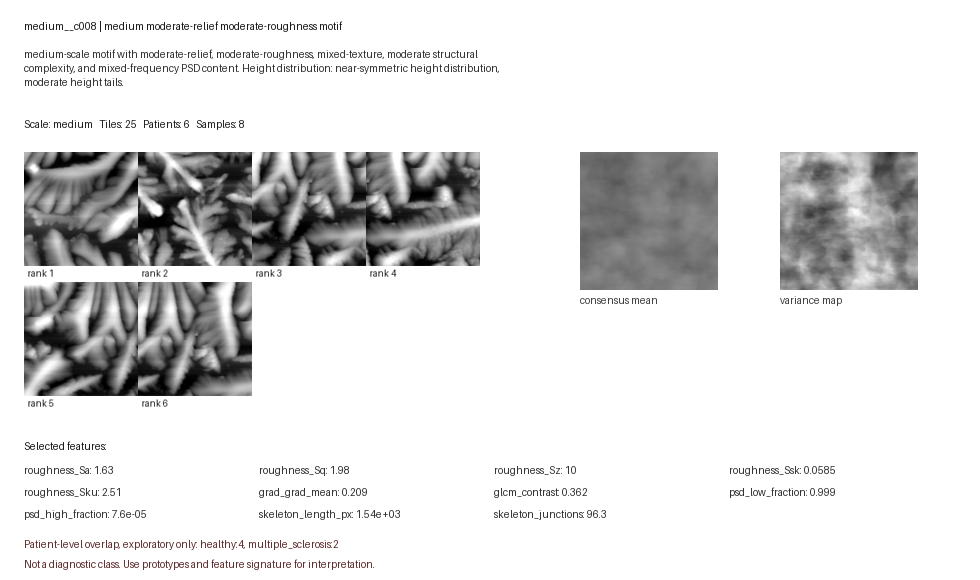
medium-scale motif with moderate-relief, moderate-roughness, mixed-texture, moderate structural complexity, and mixed-frequency PSD content. Height distribution: near-symmetric height distribution, moderate height tails.
Scale: medium | Tiles: 25 | Patients: 6 | Samples: 8
Patient-level overlap: healthy:4, multiple_sclerosis:2
Warnings: cluster_dominated_by_one_patient, cluster_dominated_by_one_sample
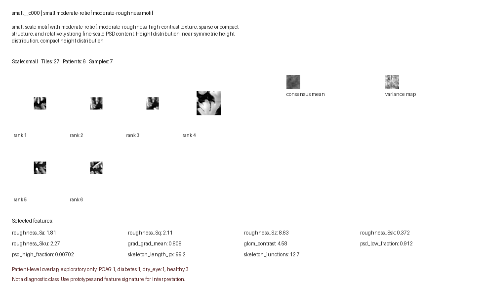
small-scale motif with moderate-relief, moderate-roughness, high-contrast texture, sparse or compact structure, and relatively strong fine-scale PSD content. Height distribution: near-symmetric height distribution, compact height distribution.
Scale: small | Tiles: 27 | Patients: 6 | Samples: 7
Patient-level overlap: POAG:1, diabetes:1, dry_eye:1, healthy:3
Warnings: cluster_dominated_by_one_patient, cluster_dominated_by_one_sample
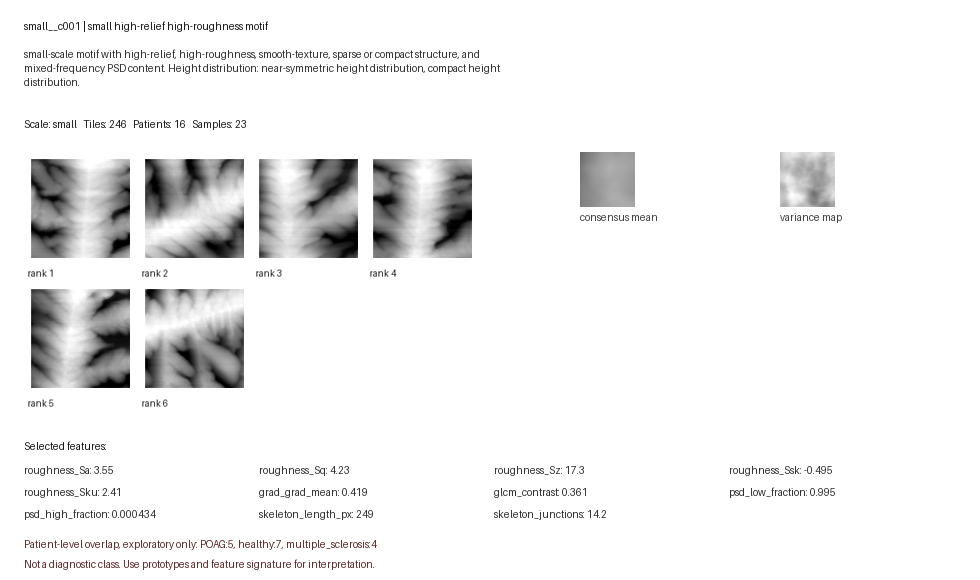
small-scale motif with high-relief, high-roughness, smooth-texture, sparse or compact structure, and mixed-frequency PSD content. Height distribution: near-symmetric height distribution, compact height distribution.
Scale: small | Tiles: 246 | Patients: 16 | Samples: 23
Patient-level overlap: POAG:5, healthy:7, multiple_sclerosis:4
Warnings: none
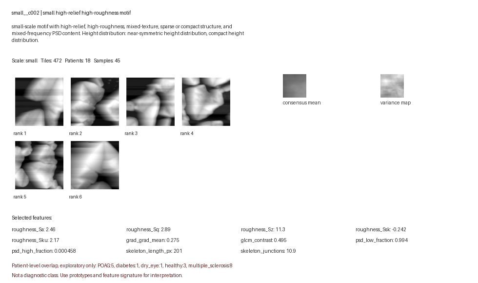
small-scale motif with high-relief, high-roughness, mixed-texture, sparse or compact structure, and mixed-frequency PSD content. Height distribution: near-symmetric height distribution, compact height distribution.
Scale: small | Tiles: 472 | Patients: 18 | Samples: 45
Patient-level overlap: POAG:5, diabetes:1, dry_eye:1, healthy:3, multiple_sclerosis:8
Warnings: none
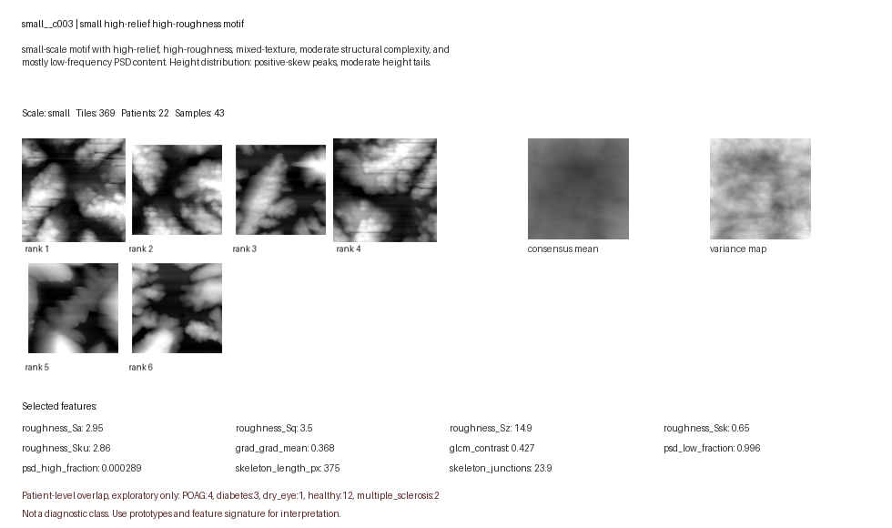
small-scale motif with high-relief, high-roughness, mixed-texture, moderate structural complexity, and mostly low-frequency PSD content. Height distribution: positive-skew peaks, moderate height tails.
Scale: small | Tiles: 369 | Patients: 22 | Samples: 43
Patient-level overlap: POAG:4, diabetes:3, dry_eye:1, healthy:12, multiple_sclerosis:2
Warnings: none
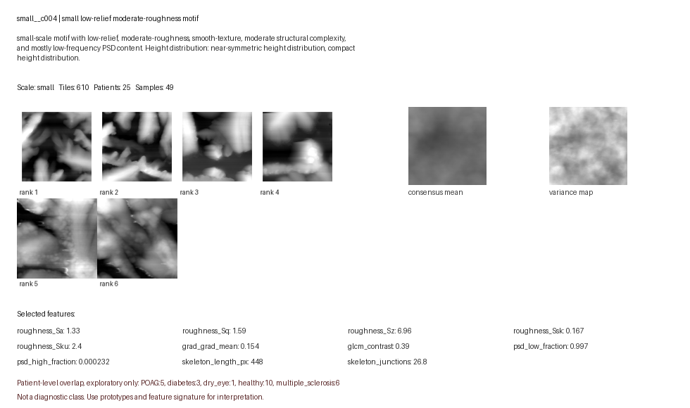
small-scale motif with low-relief, moderate-roughness, smooth-texture, moderate structural complexity, and mostly low-frequency PSD content. Height distribution: near-symmetric height distribution, compact height distribution.
Scale: small | Tiles: 610 | Patients: 25 | Samples: 49
Patient-level overlap: POAG:5, diabetes:3, dry_eye:1, healthy:10, multiple_sclerosis:6
Warnings: none
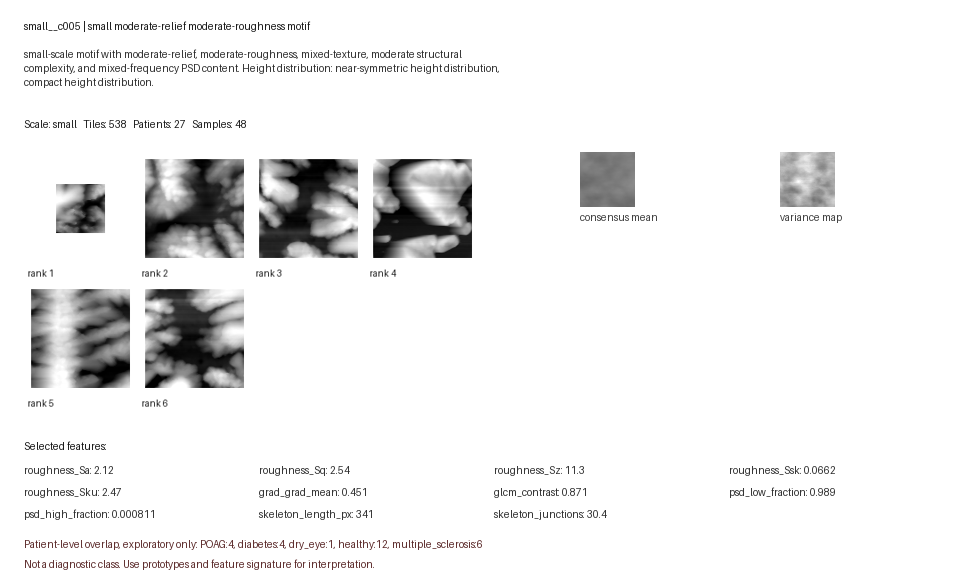
small-scale motif with moderate-relief, moderate-roughness, mixed-texture, moderate structural complexity, and mixed-frequency PSD content. Height distribution: near-symmetric height distribution, compact height distribution.
Scale: small | Tiles: 538 | Patients: 27 | Samples: 48
Patient-level overlap: POAG:4, diabetes:4, dry_eye:1, healthy:12, multiple_sclerosis:6
Warnings: none
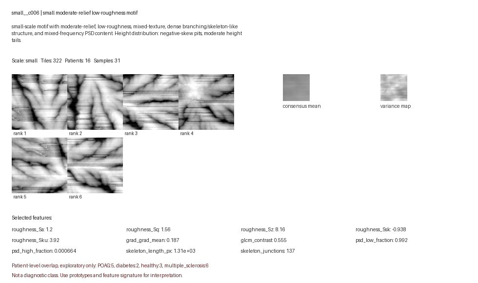
small-scale motif with moderate-relief, low-roughness, mixed-texture, dense branching/skeleton-like structure, and mixed-frequency PSD content. Height distribution: negative-skew pits, moderate height tails.
Scale: small | Tiles: 322 | Patients: 16 | Samples: 31
Patient-level overlap: POAG:5, diabetes:2, healthy:3, multiple_sclerosis:6
Warnings: none
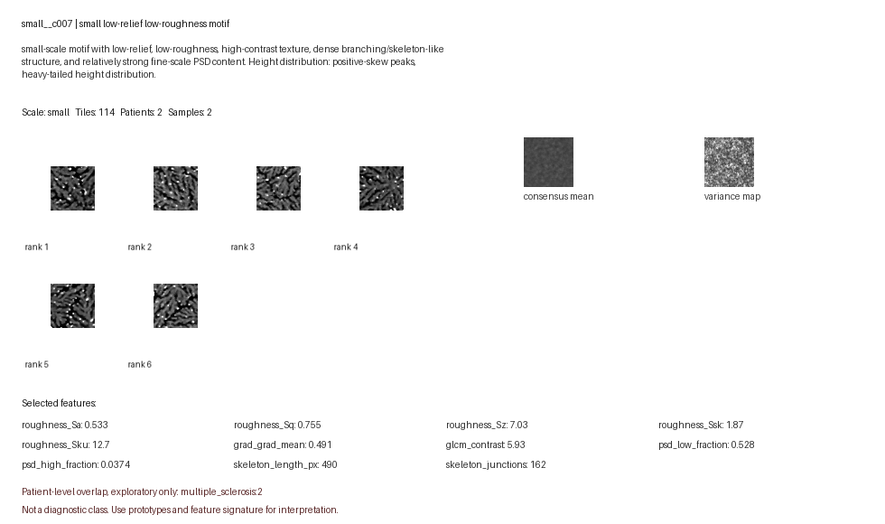
small-scale motif with low-relief, low-roughness, high-contrast texture, dense branching/skeleton-like structure, and relatively strong fine-scale PSD content. Height distribution: positive-skew peaks, heavy-tailed height distribution.
Scale: small | Tiles: 114 | Patients: 2 | Samples: 2
Patient-level overlap: multiple_sclerosis:2
Warnings: cluster_dominated_by_one_patient, cluster_dominated_by_one_sample
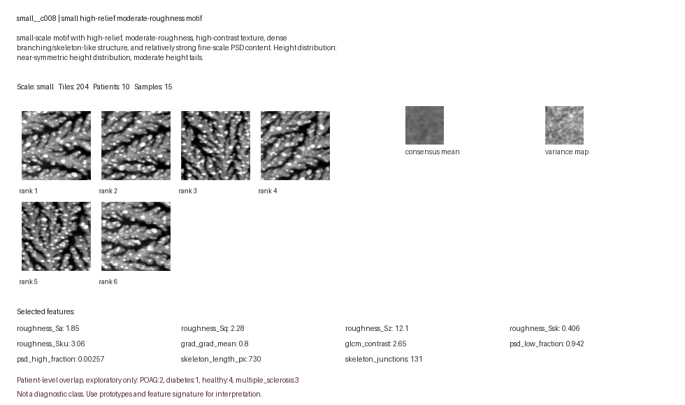
small-scale motif with high-relief, moderate-roughness, high-contrast texture, dense branching/skeleton-like structure, and relatively strong fine-scale PSD content. Height distribution: near-symmetric height distribution, moderate height tails.
Scale: small | Tiles: 204 | Patients: 10 | Samples: 15
Patient-level overlap: POAG:2, diabetes:1, healthy:4, multiple_sclerosis:3
Warnings: cluster_dominated_by_one_patient, cluster_dominated_by_one_sample
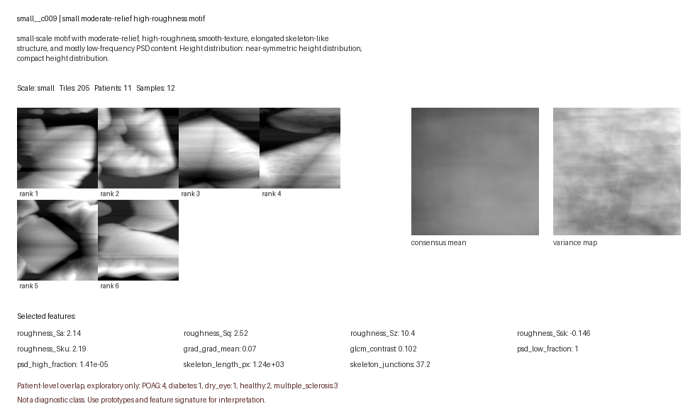
small-scale motif with moderate-relief, high-roughness, smooth-texture, elongated skeleton-like structure, and mostly low-frequency PSD content. Height distribution: near-symmetric height distribution, compact height distribution.
Scale: small | Tiles: 205 | Patients: 11 | Samples: 12
Patient-level overlap: POAG:4, diabetes:1, dry_eye:1, healthy:2, multiple_sclerosis:3
Warnings: none
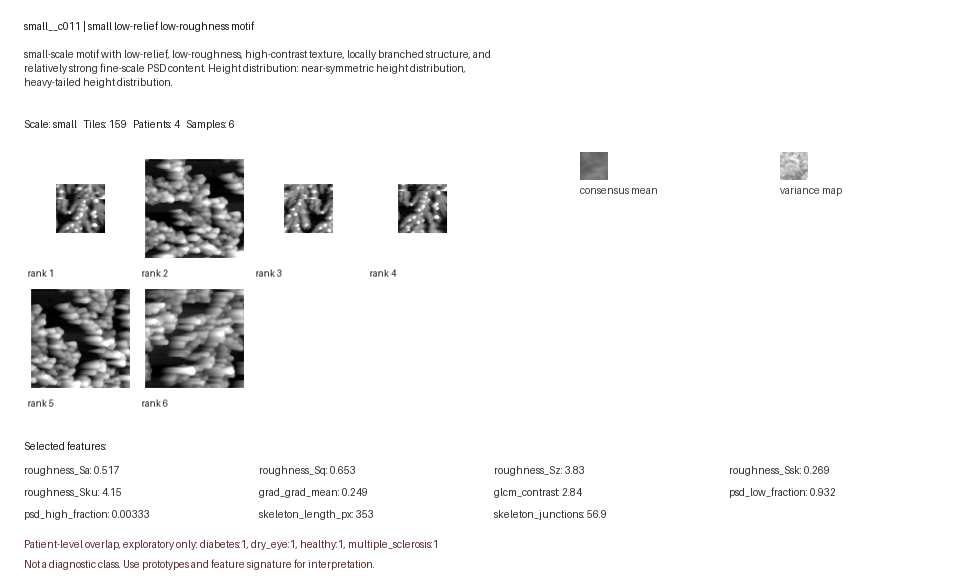
small-scale motif with low-relief, low-roughness, high-contrast texture, locally branched structure, and relatively strong fine-scale PSD content. Height distribution: near-symmetric height distribution, heavy-tailed height distribution.
Scale: small | Tiles: 159 | Patients: 4 | Samples: 6
Patient-level overlap: diabetes:1, dry_eye:1, healthy:1, multiple_sclerosis:1
Warnings: cluster_dominated_by_one_patient, cluster_dominated_by_one_sample
{kind=link}
{kind=link}
{kind=link}
{kind=link}
{kind=link}
{kind=link}
{kind=link}
{kind=link}
{kind=link}
{kind=link}
{kind=link}
{kind=link}
{kind=link}
{kind=link}
{kind=link}
{kind=link}
{kind=link}
{kind=link}
{kind=link}
{kind=link}